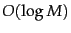
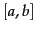
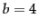
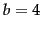

Given an inverted index and a query, our first task is to determine whether each query term exists in the vocabulary and if so, identify the pointer to the corresponding postings. This vocabulary lookup operation uses a classical data structure called the dictionary and has two broad classes of solutions: hashing, and search trees. In the literature of data structures, the entries in the vocabulary (in our case, terms) are often referred to as keys. The choice of solution (hashing, or search trees) is governed by a number of questions: (1) How many keys are we likely to have? (2) Is the number likely to remain static, or change a lot - and in the case of changes, are we likely to only have new keys inserted, or to also have some keys in the dictionary be deleted? (3) What are the relative frequencies with which various keys will be accessed?
Hashing has been used for dictionary lookup in some search engines. Each vocabulary term (key) is hashed into an integer over a large enough space that hash collisions are unlikely; collisions if any are resolved by auxiliary structures that can demand care to maintain. At query time, we hash each query term separately and following a pointer to the corresponding postings, taking into account any logic for resolving hash collisions. There is no easy way to find minor variants of a query term (such as the accented and non-accented versions of a word like resume), since these could be hashed to very different integers. In particular, we cannot seek (for instance) all terms beginning with the prefix automat, an operation that we will require below in Section 3.2 . Finally, in a setting (such as the Web) where the size of the vocabulary keeps growing, a hash function designed for current needs may not suffice in a few years' time.
At query time, we hash each query term separately and following a pointer to the corresponding postings, taking into account any logic for resolving hash collisions. There is no easy way to find minor variants of a query term (such as the accented and non-accented versions of a word like resume), since these could be hashed to very different integers. In particular, we cannot seek (for instance) all terms beginning with the prefix automat, an operation that we will require below in Section 3.2 . Finally, in a setting (such as the Web) where the size of the vocabulary keeps growing, a hash function designed for current needs may not suffice in a few years' time.
![\includegraphics[width=12cm]{bst.eps}](img133.png) A binary search tree.In this example the branch at the root partitions vocabulary terms into two subtrees, those whose first letter is between a and m, and the rest.
A binary search tree.In this example the branch at the root partitions vocabulary terms into two subtrees, those whose first letter is between a and m, and the rest.
Search trees overcome many of these issues - for instance, they permit us to enumerate all vocabulary terms beginning with automat. The best-known search tree is the binary tree , in which each internal node has two children. The search for a term begins at the root of the tree. Each internal node (including the root) represents a binary test, based on whose outcome the search proceeds to one of the two sub-trees below that node. Figure 3.1 gives an example of a binary search tree used for a dictionary. Efficient search (with a number of comparisons that is ) hinges on the tree being balanced: the numbers of terms under the two sub-trees of any node are either equal or differ by one. The principal issue here is that of rebalancing: as terms are inserted into or deleted from the binary search tree, it needs to be rebalanced so that the balance property is maintained.
To mitigate rebalancing, one approach is to allow the number of sub-trees under an internal node to vary in a fixed interval. A search tree commonly used for a dictionary is the B-tree - a search tree in which every internal node has a number of children in the interval , where and  are appropriate positive integers; Figure 3.2 shows an example with
are appropriate positive integers; Figure 3.2 shows an example with  and . Each branch under an internal node again represents a test for a range of character sequences, as in the binary tree example of Figure 3.1 . A B-tree may be viewed as ``collapsing'' multiple levels of the binary tree into one; this is especially advantageous when some of the dictionary is disk-resident, in which case this collapsing serves the function of pre-fetching imminent binary tests. In such cases, the integers and
and . Each branch under an internal node again represents a test for a range of character sequences, as in the binary tree example of Figure 3.1 . A B-tree may be viewed as ``collapsing'' multiple levels of the binary tree into one; this is especially advantageous when some of the dictionary is disk-resident, in which case this collapsing serves the function of pre-fetching imminent binary tests. In such cases, the integers and  are determined by the sizes of disk blocks. Section 3.5 contains pointers to further background on search trees and B-trees.
are determined by the sizes of disk blocks. Section 3.5 contains pointers to further background on search trees and B-trees.
It should be noted that unlike hashing, search trees demand that the characters used in the document collection have a prescribed ordering; for instance, the 26 letters of the English alphabet are always listed in the specific order A through Z. Some Asian languages such as Chinese do not always have a unique ordering, although by now all languages (including Chinese and Japanese) have adopted a standard ordering system for their character sets.
![\includegraphics[width=13cm]{btree.eps}](img140.png) A B-tree.In this example every internal node has between 2 and 4 children.
A B-tree.In this example every internal node has between 2 and 4 children.